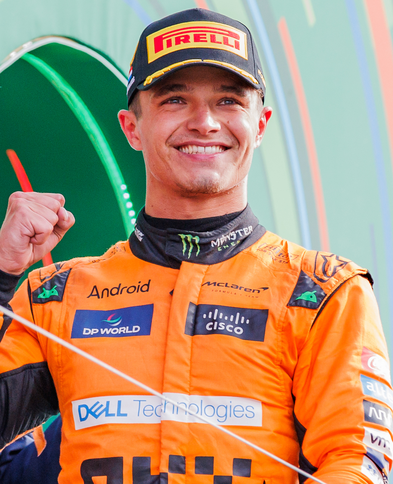

Source-labelled newsroomIndependent / Est. 2026Updated for the Dutch GP weekend
Editorial desk Issue 001
SPECTATEMotion
Race intelligence & culture in motion
Desk refresh14 August 2026 · 19:25 ISTWhat changed: the page records confirmed, reported and speculative items separately; unconfirmed claims remain labelled.
The newsroom
Read the grid, not the noise.
A deliberately separated feed for official facts, named reporting, open speculation and SPECTATE MOTION analysis. Every item has an evidence label, source link and update time.
Cadillac names Marcin Budkowski as team principal.
Cadillac announced Budkowski's appointment on 12 August. The announcement says he replaces Graeme Lowdon and is expected to begin in the role at Zandvoort.
The most recently verified standings place Kimi Antonelli first in the drivers' standings, while Mercedes leads the constructors' table. Refer to the official results page for the current table.
Stories are not promoted because they are loud. The label says how much has actually been established.
Confirmed
2026 technical rules
The 2026 reset: active aero, sustainable fuel and a 50/50 power split.
Formula 1's published guide sets out a new power-unit formula built around roughly equal electrical and combustion output, powered by advanced sustainable fuels. Active front and rear wings replace the old DRS-era approach.
The FIA is publicly discussing limits on changing the rule package mid-season.
Motorsport.com reported comments from FIA single-seater chief Nikolas Tombazis about why the governing body could not intervene earlier in response to concerns around the 2026 rules. This is a report of a debate, not notice of an approved rule change.
The 2026 season finale remains a contingency story, not a settled calendar item.
The Race has reported that Formula 1 explored options following earlier calendar disruption and that a backup venue was being considered. No final replacement or alternative has been treated here as confirmed.
Red Bull succession talk stays in the tracker until a team announcement exists.
RacingNews365 reported that a potential successor connected to Gianpiero Lambiase's role had been identified. There is no team confirmation in the source being tracked, so SPECTATE MOTION treats this only as a developing report.
Rumour tracker policy We only retain an unconfirmed item when it has a named, accountable reporting source and genuine public-interest value. Each item stays visible as confirmed, denied, expired or incorrect-not silently rewritten.
Source ledger
CONFIRMEDDirect official source, FIA document or on-record team / driver statement.FIA documents
REPORTEDNamed, accountable reporting. The claim is attributed and never elevated to official fact by repetition.Attribution in every item
SPECULATIONAn unconfirmed claim with its basis, confidence and what would change the status stated openly.Never breaking-news language
ANALYSISOur interpretation or probability model, with assumptions and timestamp shown.View predictions
The Grid
Three drivers worth watching as the race-weekend story takes shape.

McLaren
Lando Norris
Pressure, pace and the detail that separates a title contender from the pack.
Can the leading teams convert qualifying pace into clean-air control? Which midfield programmes have the tyre confidence to extend a first stint? How much will track evolution reshape the order? And which claims still need an official source?
Desk note: current Assumptions visible, conclusions provisional.
Driver re-signings
Driver re-signings to check before Zandvoort.
CONFIRMED
Max Verstappen re-signs with Red Bull through 2030.
Red Bull announced the extension on 20 August 2026, ending the latest round of speculation over Verstappen's future.